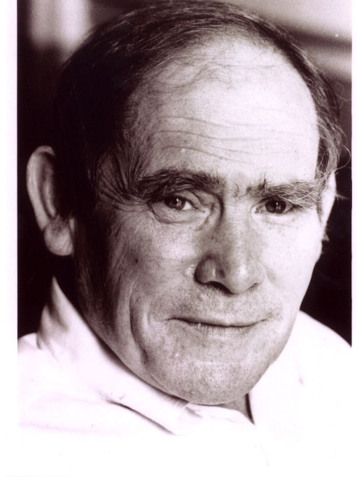

Sydney Brenner likes travelling, stirring up the scientific
world, and good wine. For more than 40 years, Dr. Brenner has been
well known for his contributions to genetics and biology. His current work
is allowing the application of comparative genetics to the analysis of
vertebrate gene regulation. In addition, he and his coworkers Brenner have
been studying vertebrate gene and genome evolution. For many years,
he has written a column called Loose
Ends for Current
Biology .